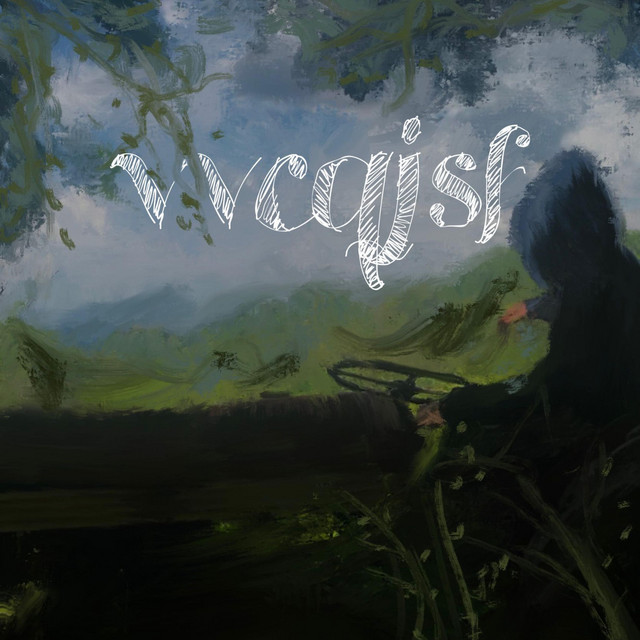
VRAIMENT I DON'T CARE
AETHĘR
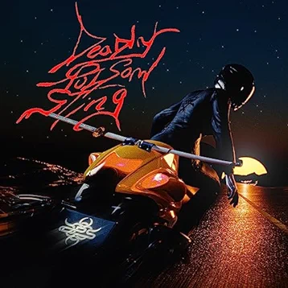
Ivy
baby hayabusa, neophron
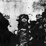
GARÇON
Luther
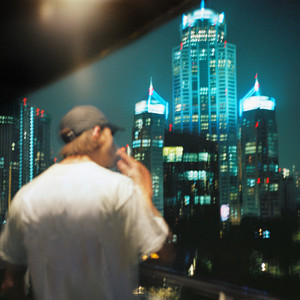
Cactus
Luv Resval, Roméo Elvis
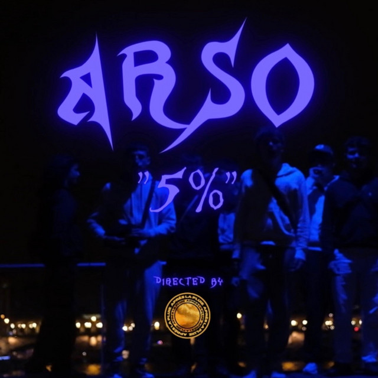
5%
Arso911
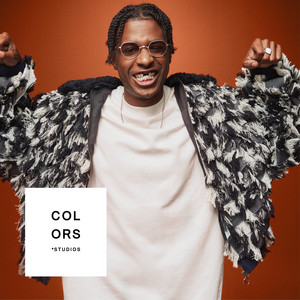
Bécane
Yamê
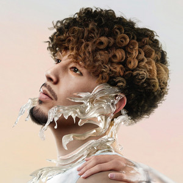
ENTRE PALMER ET PARIS ZOO
Khali
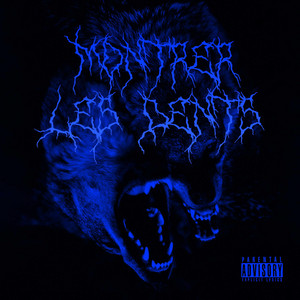
Montrer les dents
Luther
LÏLÄ
Kaï
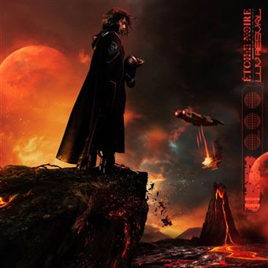
J'ai fait un rêve
Luv Resval
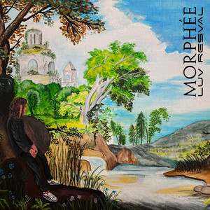
Morphée
Bendo, Luv Resval
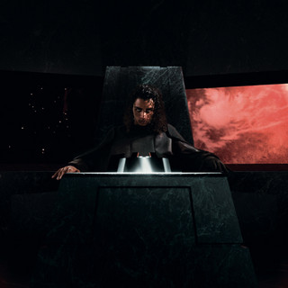
Luv Resval
Artiste
Luv Resval, de son vrai nom Léo Lesage, était un rappeur et chanteur français né le 6 janvier 1998 à Cambrai et mort le 21 octobre 2022 à Mennecy. Il a commencé sa carrière musicale en 2014, en publiant des mixtapes et des singles sur les réseaux sociaux. Il a rapidement attiré l'attention de la scène hip-hop française, et en 2018, il a signé un contrat avec le label AWA. Son premier album studio, "Brise-Monde", est sorti en 2021. L'album a été un succès commercial et critique, et a été certifié disque d'or. Il a été suivi d'un deuxième album, "Mustafar", en 2022. La musique de Luv Resval était caractérisée par son flow mélodique et ses textes introspectifs. Il était également connu pour ses collaborations avec d'autres artistes hip-hop français, tels que Nekfeu, Lomepal et Freeze Corleone. Luv Resval est décédé le 21 octobre 2022 à l'âge de 24 ans, des suites d'une crise d'asthme.
Nekfeu
Artiste
Nekfeu, de son vrai nom Ken Samaras, est un rappeur et acteur français né le 3 avril 1990 à La Trinité dans les Alpes-Maritimes. Membre de plusieurs groupes et collectifs de rap, il entame avec brio sa carrière solo en 2015 avec Feu. Aussi connu en tant que Nek le Fennec. Il se fait un nom au sein du collectif l’Entourage et des groupes 1995 et S Crew. Il sort son premier album intitulé "Feu" le 8 juin 2015,